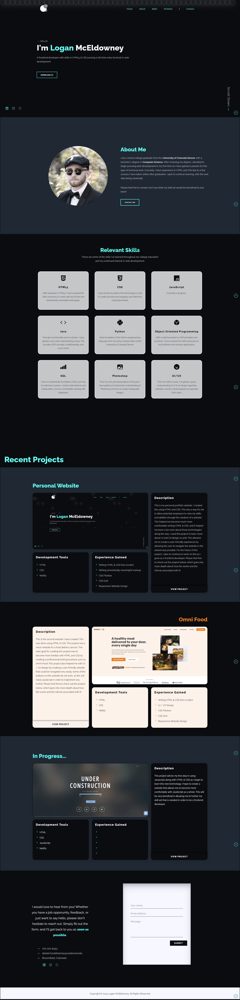

Personal Website
3 minute read
This website was created in order to showcase my skills as a web developer. I created this in order to become more comfortable with HTML and CSS, while also providing a way for employers to see my work.
Project Purpose & Goal
The purpose of creating this project was to demonstrate my skills as a web developer. I did this by creating my own personal website that could walk potential employers through my skills and abilities in a more interactive way. This being one of my first actual websites, my main goal was to become more comfortable with HTML and CSS. In addition to this, I was able to learn a lot more about these technologies and be able to showcase my potential to employers.
Technologies Used
The main technologies used for this project was HTML and CSS. Having just completed an online course regarding these topics, I felt that it was a perfect time to create my own personal website. While creating this, I became much more comfortable using HTML and CSS, and learning much more about actually designing a website. I believe this made it much easier for me to implemenet these languages in a much more efficient way.
Design & Thought Process
Before designing this website, I wanted the user to have a very easy time navigating the website. To do this, I implemented a navigation bar at the top, and also an arrow that follows the user as he/she scrolls down the page. This allows the user to be able to jump to the top of the page, or specific sections very easily.
In addition to this, I wanted the website to be interactive and fun to use. To do this, I implemented hover effects on some of my elements in order to make the page feel more interactive.
As far as the overall design of this website, I mainly wanted to include 5 different sections. These include the home page, about page, skills page, portfolio page, and finally the contact page. The home page would simply introduce myself, and allow the user to be able to download my resume. From here, the about page will briefly talk about myself and my passion for web development. After this, the skills section lists the different skills I have gained throughout my college education and my further studies into web development. Next, the featured projects page would simply allow the user to view specific projects that I have created over the past few months. Finally, the contact page allows the user to contact me through a forum in order to discuss further with me regarding potential career opportunities.